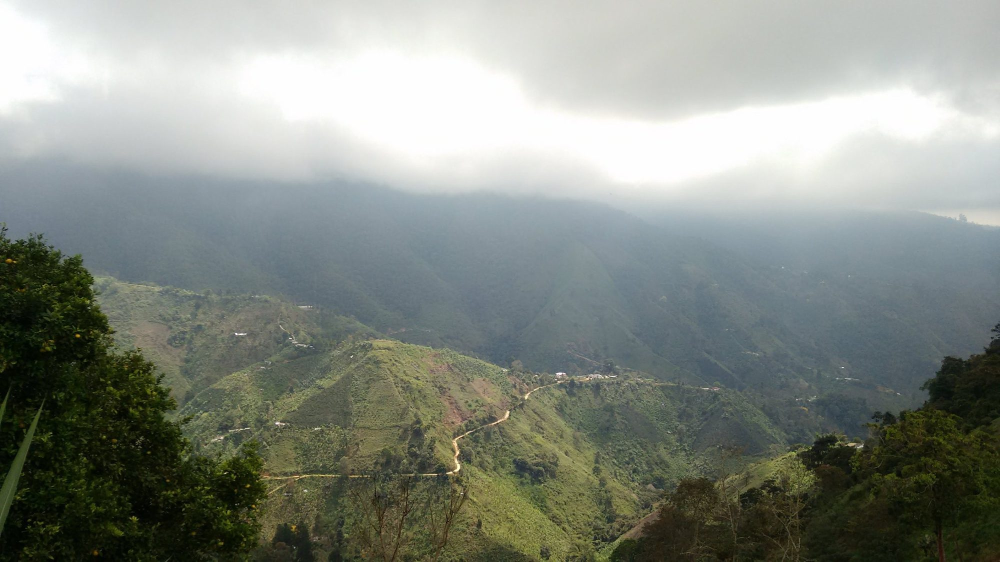

Nuestra historia
Santander en cada taza
Los Santanderes fueron de las primeras regiones cafeteras de Colombia. Entre el cañón del Chicamocha, los pueblos de piedra y las montañas de la cordillera Oriental, generaciones de familias han cultivado café a la sombra y lo han beneficiado con paciencia.
De Santander nace para llevar esos cafés a tu mesa con su origen a la vista. Seleccionamos cafés de familias productoras de las provincias santandereanas y te contamos de dónde viene cada taza: municipio, altura, variedad y proceso.

Del cafetal a la taza
- CosechaRecolección manual, grano a grano, en el punto justo de maduración.
- BeneficioDespulpado, fermentación y lavado para resaltar la limpieza en taza.
- SecadoSecado lento al sol de la montaña santandereana.
- TuesteTueste por lotes según el perfil de cada origen.